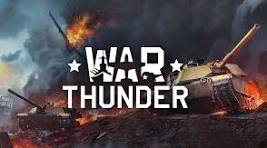
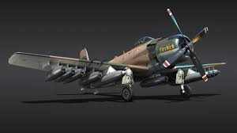
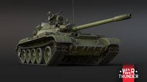
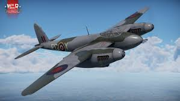

LAS 3 MEJORES NACIONES PARA JUGAR EN WAR WAR THUNDER
¿Porqué debería elegir una de estas 4 naciones?
Primero que nada, es bien sabido que las naciones que a continuación se
mostrarán, fueron las principales naciones que participaron en la segunda
guerra mundial,
por lo cual, el juego desde un principio puso demasiado énfasis en
desarrollar y enriquecer la variedad de vehículos que en estas naciones,
debido a esto es muy
probable que como nuevo usuario te sea más fácil adaptarte y sacar mejor
provecho del juego, además de que te ayudará a avanzar más rápidpo en un
futuro.
A continuación encontrarás el listado de las naciones las cuales deberías
considerar prioritariamente:
Estados unidos

En esta nación podrás encontrar una gran variedad de vehiculos terrestres,
sin embargo su principal virtud son sus aviones con gran capacidad de
bombas.
Unión sovietica

Esta nación se destaca principalmente por su gran variedad y buen blindaje
de sus vehiculos terrestres.
Gran Bretaña

En esta nación, al igual que en estados unidos, podrás encontrar una gran
variead de aeronaves de ataque a tierra y una gran variead de vehiculos
terrestres muy blindados, sin embargo con una velocidad muy baja.
Para más información visite la página oficial de War thunder en el
siguiente enlace:
War Thunder Pagina Oficial